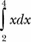

7
Solving Calculus Problems

In this final chapter, we’ll learn to solve calculus problems. We’ll first learn about mathematical functions, followed by a quick overview of the common mathematical functions available in Python’s standard library and SymPy. Then, we’ll learn how we can find the limits of functions and calculate derivatives and integrals— that is, the kinds of things you’d be doing in any calculus class. Let’s get started!
What Is a Function?
Let’s start out with some basic definitions. A function is a mapping between an input set and an output set. The special condition of a function is that an element of the input set is related to exactly one element of the output set. For example, Figure 7-1 shows two sets such that an element of the output set is the square of an element that belongs to the input set.
Figure 7-1: A function describes a mapping between an input set and an output set. Here, an element of the output set is the square of an element from the input set.
Using the familiar function notation, we’d write this function as f(x) = x2, where x is the independent variable quantity. So f(2) = 4, f(100) = 10000, and so on. We refer to x as the independent variable quantity because we’re free to assume a value for it as long as that value is within its domain (see the next section).
Functions can also be defined in terms of multiple variables. For example, f(x, y) = x2 + y2 defines a function of two variables, x and y.
Domain and Range of a Function
The domain of a function is the set of input values that the independent variable can validly assume. The output set of a function is called the range.
For example, the domain of the function f(x) = 1/x is all nonzero real and complex numbers because 1/0 isn’t defined. The range is formed by the set of values obtained by substituting each number in the domain into 1/x, so in this case it is also all nonzero real and complex numbers.
NOTE
The domain and range of a function can certainly be different. For example, for the function x2, the domain is all positive and negative numbers, but the range is only the positive numbers.
An Overview of Common Mathematical Functions
We’ve already used a number of common mathematical functions from the Python standard library’s math module. A couple of familiar examples are the sin() and cos() functions, which correspond to the trigonometric functions sine and cosine. Other trigonometric functions—tan() and the inverse equivalents of these functions, asin(), acos(), and atan()—are also defined.
The math module also includes functions that find the logarithm of a number—the natural logarithm function log(), the base-2 logarithm log2(), and the base-10 logarithm log10()—as well as the function exp(), which finds the value of ex, where e is Euler’s number (approximately 2.71828).
One drawback of all these functions is that they’re not suitable for working with symbolic expressions. If we want to manipulate a mathematical expression involving symbols, we have to start using the equivalent functions defined by SymPy.
Let’s see a quick example:
>>> import math
>>> math.sin(math.pi/2)
1.0
Here, we find the sine of the angle π/2 using the sin() function defined by the standard library’s math module. Then, we can do the same using SymPy.
>>> import sympy
>>> sympy.sin(math.pi/2)
1.00000000000000
Similar to the standard library’s sin() function, SymPy’s sin() function expects the angle to be expressed in radians. Both functions return 1.
Now, let’s try to call each function with a symbol instead and see what happens:
>>> from sympy import Symbol
>>> theta = Symbol('theta')
➊ >>> math.sin(theta) + math.sin(theta)
Traceback (most recent call last):
File "<pyshell#53>", line 1, in <module>
math.sin(theta) + math.sin(theta)
File "/usr/lib/python3.4/site-packages/sympy/core/expr.py", line 225, in
__float__
raise TypeError("can't convert expression to float")
TypeError: can't convert expression to float
➋ >>> sympy.sin(theta) + sympy.sin(theta)
2*sin(theta)
The standard library’s sin() function doesn’t know what to do when we call it with theta at ➊, so it raises an exception to indicate that it’s expecting a numerical value as an argument to the sin() function. On the other hand, SymPy is able to perform the same operation at ➋, and it returns the expression 2*sin(theta) as the result. This is hardly surprising to us now, but it illustrates the kinds of tasks where the standard library’s mathematical functions can fall short.
Let’s consider another example. Say we want to derive the expression for the time it takes for a body in projectile motion to reach the highest point if it’s thrown with initial velocity u at an angle theta (see “Projectile Motion” on page 48).
At the highest point, u*sin(theta)-g*t = 0, so to find t, we’ll use the solve() function we learned about in Chapter 4:
>>> from sympy import sin, solve, Symbol
>>> u = Symbol('u')
>>> t = Symbol('t')
>>> g = Symbol('g')
>>> theta = Symbol('theta')
>>> solve(u*sin(theta)-g*t, t)
[u*sin(theta)/g]
The expression for t, as we learned earlier, turns out to be u*sin(theta)/g, and it illustrates how the solve() function can be used to find solutions to equations containing mathematical functions as well.
Assumptions in SymPy
In all our programs, we’ve created a Symbol object in SymPy, defining the variable like so: x = Symbol('x'). Assume that as a result of an operation you asked SymPy to perform, SymPy needs to check whether the expression x + 5 is greater than 0. Let’s see what would happen:
>>> from sympy import Symbol
>>> x = Symbol('x')
>>> if (x+5) > 0:
print('Do Something')
else:
print('Do Something else')
Traceback (most recent call last):
File "<pyshell#45>", line 1, in <module>
if (x + 5) > 0:
File "/usr/lib/python3.4/site-packages/sympy/core/relational.py", line 103,
in __nonzero__
raise TypeError("cannot determine truth value of\n%s" % self)
TypeError: cannot determine truth value of
x + 5 > 0
Because SymPy doesn’t know anything about the sign of x, it can’t deduce whether x + 5 is greater than 0, so it displays an error. But basic math tells us that if x is positive, x + 5 will always be positive, and if x is negative, it will be positive only in certain cases.
So if we create a Symbol object specifying positive=True, we tell SymPy to assume only positive values. Now it knows for sure that x + 5 is definitely greater than 0:
>>> x = Symbol('x', positive=True)
>>> if (x+5) > 0:
print('Do Something')
else:
print('Do Something else')
Do Something
Note that if we’d instead specified negative=True, we could get the same error as in the first case. Just as we can declare a symbol as positive and negative, it’s also possible to specify it as real, integer, complex, imaginary, and so on. These declarations are referred to as assumptions in SymPy.
Finding the Limit of Functions
A common task in calculus is finding the limiting value (or simply the limit) of the function, when the variable’s value is assumed to approach a certain value. Consider a function f(x) = 1/x, whose graph is shown in Figure 7-2.
As the value of x increases, the value of f(x) approaches 0. Using the limit notation, we’d write this as


Figure 7-2: A graph showing the function 1/x as the value of x increases
We can find limits of functions in SymPy by creating objects of the Limit class as follows:
➊ >>> from sympy import Limit, Symbol, S
➋ >>> x = Symbol('x')
➌ >>> Limit(1/x, x, S.Infinity)
Limit(1/x, x, oo, dir='-')
At ➊, we import the Limit and Symbol classes, as well as S, which is a special SymPy class that contains the definition of infinity (positive and negative) and other special values. Then at ➋ we create a symbol object, x, to represent x. We create the Limit object at ➌, passing it three arguments: 1/x, the variable x, and finally the value at which we want to calculate the function’s limit (infinity, given by S.Infinity).
The result is returned as an unevaluated object with the oo symbol denoting positive infinity and the dir='-' symbol specifying that we are approaching the limit from the negative side.
To find the value of the limit, we use the doit() method:
>>> l = Limit(1/x, x, S.Infinity)
>>> l.doit()
0
By default, the limit is found from a positive direction, unless the value at which the limit is to be calculated is positive or negative infinity. In the case of positive infinity, the direction is negative, and vice versa. You can change the default direction as follows:
>>> Limit(1/x, x, 0, dir='-').doit()
-oo
Here, we calculate

and as we approach 0 for x from the negative side, the value of the limit approaches negative infinity. On the other hand, if we approach 0 from the positive side, the value approaches positive infinity:
>>> Limit(1/x, x, 0, dir='+').doit()
oo
The Limit class also handles functions with limits of indeterminate forms,

>>> from sympy import Symbol, sin
>>> Limit(sin(x)/x, x, 0).doit()
1
You have very likely used l’Hôpital’s rule to find such limits, but as we see here, the Limit class takes care of this for us.
Continuous Compound Interest
Say you’ve deposited $1 in a bank. This deposit is the principal, which pays you interest—in this case, interest of 100 percent that compounds n times yearly for 1 year. The amount you’ll get at the end of 1 year is given by

The prominent mathematician James Bernoulli discovered that as the value of n increases, the term (1 + 1/n)n approaches the value of e—the constant that we can verify by finding the limit of the function:
>>> from sympy import Limit, Symbol, S
>>> n = Symbol('n')
>>> Limit((1+1/n)**n, n, S.Infinity).doit()
E
For any principal amount p, any rate r, and any number of years t, the compound interest is calculated using the formula
Assuming continuous compounding interest, we can find the expression for A as follows:
>>> from sympy import Symbol, Limit, S
>>> p = Symbol('p', positive=True)
>>> r = Symbol('r', positive=True)
>>> t = Symbol('t', positive=True)
>>> Limit(p*(1+r/n)**(n*t), n, S.Infinity).doit()
p*exp(r*t)
We create three symbol objects, representing the principal amount, p, the rate of interest, r, and the number of years, t. We also tell SymPy that these symbols will assume positive values by passing the positive=True keyword argument while creating the Symbol objects. If we don’t specify, SymPy doesn’t know anything about the numerical values the symbol can assume and may not be able to evaluate the limit correctly. We then feed in the expression for the compound interest to create the Limit object and evaluate it using the doit() method. The limit turns out to be p*exp(r*t), which tells us that the compound interest grows exponentially with time for the fixed rate of interest.
Instantaneous Rate of Change
Consider a car moving along a road. It accelerates uniformly such that the distance traveled, S, is given by the function
S(t) = 5t2 + 2t + 8.
In this function, the independent variable is t, which represents the time elapsed since the car started moving.
If we measure the distance traveled in time t1 and time t2 such that t2 > t1, then we can calculate the distance moved by the car in 1 unit of time using the expression
This is also referred to as the average rate of change of the function S(t) with respect to the variable t, or in other words, the average speed. If we write t2 as t1 + δt—where δt is the difference between t2 and t1 in units of time—we can rewrite the expression for the average speed as
This expression is also a function with t1 as the variable. Now, if we further assume δt to be really small, such that it approaches 0, we can use limit notation to write this as

We will now evaluate the above limit. First, let’s create the various expression objects:
>>> from sympy import Symbol, Limit
>>> t = Symbol('t')
➊ >>> St = 5*t**2 + 2*t + 8
>>> t1 = Symbol('t1')
>>> delta_t = Symbol('delta_t')
➋ >>> St1 = St.subs({t: t1})
➌ >>> St1_delta = St.subs({t: t1 + delta_t})
We first define the function S(t) at ➊. Then, we define two symbols, t1 and delta_t, which correspond to t1 and δt. Using the subs() method, we then find S(t1) and S(t1 + δt) by substituting in the value of t for t1 and t1_delta_t at ➋ and ➌, respectively.
Now, let’s evaluate the limit:
>>> Limit((St1_delta-St1)/delta_t, delta_t, 0).doit()
10*t1 + 2
The limit turns out to be 10*t1 + 2, and it’s the rate of change of S(t) at time t1, or the instantaneous rate of change. This change is more commonly referred to as the instantaneous speed of the car at the time instant t1.
The limit we calculated here is referred to as the derivative of a function, and we can calculate it directly using SymPy’s Derivative class.
Finding the Derivative of Functions
The derivative of a function y = f(x) expresses the rate of change in the dependent variable, y, with respect to the independent variable, x. It’s denoted as either f′(x) or dy/dx. We can find the derivative of a function by creating an object of the Derivative class. Let’s use the previous function representing the motion of a car as an example:
➊ >>> from sympy import Symbol, Derivative
>>> t = Symbol('t')
>>> St = 5*t**2 + 2*t + 8
➋ >>> Derivative(St, t)
Derivative(5*t**2 + 2*t + 8, t)
We import the Derivative class at ➊. At ➋, we create an object of the Derivative class. The two arguments passed while creating the object are the function St and the symbol t, which corresponds to the variable t. As with the Limit class, an object of the Derivative class is returned, and the derivative is not actually calculated. We call the doit() method on the unevaluated Derivative object to find the derivative:
>>> d = Derivative(St, t)
>>> d.doit()
10*t + 2
The expression for the derivative turns out to be 10*t + 2. Now, if we want to calculate the value of the derivative at a particular value of t—say, t = t1 or t = 1—we can use the subs() method:
>>> d.doit().subs({t:t1})
10*t1 + 2
>>> d.doit().subs({t:1})
12
Let’s try a complicated arbitrary function with x as the only variable: (x3 + x2 + x) × (x2 + x).
>>> from sympy import Derivative, Symbol
>>> x = Symbol('x')
>>> f = (x**3 + x**2 + x)*(x**2+x)
>>> Derivative(f, x).doit()
(2*x + 1)*(x**3 + x**2 + x) + (x**2 + x)*(3*x**2 + 2*x + 1)
You may consider this function the product of two independent functions, which means that, by hand, we’d need to make use of the product rule of differentiation to find the derivative. But we don’t need to worry about that here because we can just create an object of the Derivative class to do that for us.
Try out some other complicated expressions, such as expressions involving trigonometric functions.
A Derivative Calculator
Now let’s write a derivative calculator program, which will take a function as input and then print the result of differentiating it with respect to the variable specified:
'''
Derivative calculator
'''
from sympy import Symbol, Derivative, sympify, pprint
from sympy.core.sympify import SympifyError
def derivative(f, var):
var = Symbol(var)
d = Derivative(f, var).doit()
pprint(d)
if __name__=='__main__':
➊ f = input('Enter a function: ')
var = input('Enter the variable to differentiate with respect to: ')
try:
➋ f = sympify(f)
except SympifyError:
print('Invalid input')
else:
➌ derivative(f, var)
At ➊, we ask the user to input a function for which the derivative is to be found, and then we ask for the variable with respect to which the function is to be differentiated. At ➋, we convert the input function into a SymPy object using the sympify() function. We call this function in a try...except block so that we can display an error message in case the user enters an invalid input. If the input expression is a valid expression, we call the derivative function at ➌, passing the converted expression and the variable with respect to which the function is to be differentiated as arguments.
In the derivative() function, we first create a Symbol object that corresponds to the variable with respect to which the function is to be differentiated. We use the label var to refer to this variable. Next, we create a Derivative object that passes both the function to differentiate and the symbol object var. We immediately call the doit() method to evaluate the derivative, and we then use the pprint() function to print the result so that it appears close to its mathematical counterpart. A sample execution of the program follows:
Enter a function: 2*x**2 + 3*x + 1
Enter the variable to differentiate with respect to: x
4·x + 3
Here’s a sample run when used with a function of two variables:
Enter a function: 2*x**2 + y**2
Enter the variable to differentiate with respect to: x
4·x
Calculating Partial Derivatives
In the previous program, we saw that it’s possible to calculate the derivative of a multivariable function with respect to any variable using the Derivative class. This calculation is usually referred to as partial differentiation, with partial indicating that we assume only one variable varies while the others are fixed.
Let’s consider the function f(x, y) = 2xy + xy2. The partial differentiation of f(x, y) with respect to x is

The preceding program is capable of finding the partial derivative because it’s just a matter of specifying the right variable:
Enter a function: 2*x*y + x*y**2
Enter the variable to differentiate with respect to: x
y2 + 2·y
NOTE
A key assumption I’ve made in this chapter is that all the functions we’re calculating the derivative of are differentiable in their respective domains.
Higher-Order Derivatives and Finding the Maxima and Minima
By default, creating the derivative object using the Derivative class finds the first-order derivative. To find higher-order derivatives, simply specify the order of the derivative to calculate as the third argument when you create the Derivative object. In this section I will show you how to use the first- and second-order derivative of the function to find its maxima and minima on an interval.
Consider the function x5 – 30x3 + 50x, defined on the domain [–5, 5]. Note that I have used square brackets to indicate a closed domain, indicating that the variable x can assume any real value greater than or equal to –5 and less than or equal to 5 (see Figure 7-3).
Figure 7-3: Plot of the function x5 – 30x3 + 50x, where –5 ≤ x ≤ 5
From the graph, we can see that the function attains its minimum value on the interval –2 ≤ x ≤ 0 at the point B. Similarly, it attains its maximum value on the interval 0 ≤ x ≤ 2 at the point C. On the other hand, the function attains its maximum and minimum values on the entire domain of x that we’ve considered here at the points A and D, respectively. Thus, when we consider the function on the whole interval [–5, 5], the points B and C are referred to as a local minimum and a local maximum, respectively, while the points A and D are the global maximum and the global minimum, respectively.
The term extremum (plural extrema) refers to the points where the function attains a local or global maximum or minimum. If x is an extremum of the function f(x), then the first-order derivative of f at x, denoted f′(x), must vanish. This property shows that a good way to find possible extrema is to try to solve the equation f′(x) = 0. Such solutions are called critical points of the function. Let’s try this out:
>>> from sympy import Symbol, solve, Derivative
>>> x = Symbol('x')
>>> f = x**5 - 30*x**3 + 50*x
>>> d1 = Derivative(f, x).doit()
Now that we have calculated the first-order derivative, f′(x), we’ll solve f′(x) = 0 to find the critical points:
>>> critical_points = solve(d1)
>>> critical_points
[-sqrt(-sqrt(71) + 9), sqrt(-sqrt(71) + 9), -sqrt(sqrt(71) + 9),
sqrt(sqrt(71) + 9)]
The numbers in the list critical_points shown here correspond to the points B, C, A, and D, respectively. We will create labels to refer to these points, and then we can use the labels in our commands:
>>> A = critical_points[2]
>>> B = critical_points[0]
>>> C = critical_points[1]
>>> D = critical_points[3]
Because all the critical points for this function lie within the considered interval, they are all relevant for our search for the global maximum and minimum of f(x). We may now apply the so-called second derivative test to narrow down which critical points could be global maxima or minima.
First, we calculate the second-order derivative for the function f(x). Note that to do so, we enter 2 as the third argument:
>>> d2 = Derivative(f, x, 2).doit()
Now, we find the value of the second derivative by substituting the value of each of the critical points one by one in place of x. If the resulting value is less than 0, the point is a local maximum; if the value is greater than 0, it’s a local minimum. If the resulting value is 0, then the test is inconclusive and we cannot deduce anything about whether the critical point x is a local minimum, maximum, or neither.
>>> d2.subs({x:B}).evalf()
127.661060789073
>>> d2.subs({x:C}).evalf()
-127.661060789073
>>> d2.subs({x:A}).evalf()
-703.493179468151
>>> d2.subs({x:D}).evalf()
703.493179468151
Evaluating the second derivative test at the critical points tells us that the points A and C are local maxima and the points B and D are local minima.
The global maximum and minimum of f(x) on the interval [–5, 5] is attained either at a critical point x or at one of the endpoints of the domain (x = –5 and x = 5). We have already found all of the critical points, which are the points A, B, C, and D. The function cannot attain its global minimum at either of the critical points A or C because they are local maximums. By similar logic, the function cannot attain its global maximum at B or D.
Thus, to find the global maximum, we must compute the value of f(x) at the points A, C, –5, and 5. Among these points, the place where f(x) has the largest value must be the global maximum.
We will create two labels, x_min and x_max, to refer to the domain boundaries and evaluate the function at the points A, C, x_min, and x_max:
>>> x_min = -5
>>> x_max = 5
>>> f.subs({x:A}).evalf()
705.959460380365
>>> f.subs({x:C}).evalf()
25.0846626340294
>>> f.subs({x:x_min}).evalf()
375.000000000000
>>> f.subs({x:x_max}).evalf()
-375.000000000000
By these calculations, as well as by examining the function value at all the critical points and the domain boundaries (Figure 7-3), we see that the point A turns out be the global maximum.
Similarly, to determine the global minimum, we must compute the values of f(x) at the points B, D, –5, and 5:
>>> f.subs({x:B}).evalf()
-25.0846626340294
>>> f.subs({x:D}).evalf()
-705.959460380365
>>> f.subs({x:x_min}).evalf()
375.000000000000
>>> f.subs({x:x_max}).evalf()
-375.000000000000
The point where f(x) has the smallest value must be the global minimum for the function; this turns out to be point D.
This method for finding the extrema of a function—by considering the function’s value at all of the critical points (after potentially discarding some via the second derivative test) and boundary values—will always work as long as the function is twice differentiable. That is, both the first and second derivative must exist everywhere in the domain.
For a function such as ex, there might not be any critical points in the domain, but in this case the method works fine: it simply tells us that the extrema occur at the domain boundary.
Finding the Global Maximum Using Gradient Ascent
Sometimes we’re just interested in finding the global maximum for a function instead of all the local and global maxima and minima. For example, we might want to discover the angle of projection for which a ball will cover the maximum horizontal distance. We’re going to learn a new, more practical approach to solve such a problem. This approach makes use of the first derivative only, so it’s applicable only to functions for which the first derivative can be calculated.
This method is called the gradient ascent method, which is an iterative approach to finding the global maximum. Because the gradient ascent method involves lots of computation, it’s the perfect kind of thing to solve programmatically rather than by hand. Let’s try it out using the example problem of finding the angle of projection. In Chapter 2, we derived the expression
to calculate the time of flight for a body in projectile motion that’s thrown with a velocity u at an angle θ. The range of a projectile, R, is the total horizontal distance traveled by the projectile and is given by the product of ux × tflight. Here, ux is the horizontal component of the initial velocity and is equal to u cosθ. Substituting the formulas for ux and tflight, we get the expression

The plot in Figure 7-4 shows values of θ between 0 and 90 degrees and the corresponding range (distance traveled) for each angle. From the graph, we can see that the maximum range is obtained when the angle of projection is around 45 degrees. We’ll now learn to use the gradient ascent method to find this value of θ numerically.

Figure 7-4: The range of a projectile thrown with an initial velocity of 25 m/s with varying angles of projection
The gradient ascent method is an iterative method: we start with an initial value of θ—say, 0.001, or θold = 0.001—and gradually get closer to the value of θ that corresponds to the maximum range (Figure 7-5). The step that gets us closer is the equation
where λ is the step size and

is the derivative of R with respect to θ. Once we set θold = 0.001, we do the following:
1. Calculate θnew using the preceding equation.
2. If the absolute difference θnew – θold is greater than a value, ε, we set θold = θnew and return to step 1. Otherwise, we go to step 3.
3. θnew is an approximate value of θ for which R has the maximum value.
The value of epsilon (ε) determines when we decide to stop the iteration of the algorithm. It is discussed in “The Role of the Step Size and Epsilon” on page 197.

Figure 7-5: The gradient ascent method takes us iteratively toward the maximum point of the function.
The following grad_ascent() function implements the gradient ascent algorithm. The parameter x0 is the initial value of the variable at which to start the iteration, f1x is the derivative of the function whose maximum we want to find, and x is the Symbol object corresponding to the variable for the function.
'''
Use gradient ascent to find the angle at which the projectile
has maximum range for a fixed velocity, 25 m/s
'''
import math
from sympy import Derivative, Symbol, sin
def grad_ascent(x0, f1x, x):
➊ epsilon = 1e-6
➋ step_size = 1e-4
➌ x_old = x0
➍ x_new = x_old + step_size*f1x.subs({x:x_old}).evalf()
➎ while abs(x_old - x_new) > epsilon:
x_old = x_new
x_new = x_old + step_size*f1x.subs({x:x_old}).evalf()
return x_new
➏ def find_max_theta(R, theta):
# Calculate the first derivative
R1theta = Derivative(R, theta).doit()
theta0 = 1e-3
theta_max = grad_ascent(theta0, R1theta, theta)
➐ return theta_max
if __name__ == '__main__':
g = 9.8
# Assume initial velocity
u = 25
# Expression for range
theta = Symbol('theta')
➑ R = u**2*sin(2*theta)/g
➒ theta_max = find_max_theta(R, theta)
print('Theta: {0}'.format(math.degrees(theta_max)))
print('Maximum Range: {0}'.format(R.subs({theta:theta_max})))
We set the epsilon value to 1e-6 and the step size to 1e-4 at ➊ and ➋, respectively. The epsilon value must always be a very small positive value close to 0, and the step size should be chosen such that the variable is incremented in small amounts at every iteration of the algorithm. The choice of the value of epsilon and step size is discussed in a bit more detail in “The Role of the Step Size and Epsilon” on page 197.
We set x_old to x0 at ➌ and calculate x_new for the first time at ➍. We use the subs() method to substitute the value of x_old in place of the variable and then use evalf() to calculate the numerical value. If the absolute difference abs(x_old – x_new) is greater than epsilon, the while loop at ➎ keeps executing, and we keep updating the value of x_old and x_new as per steps 1 and 2 of the gradient ascent algorithm. Once we’re out of the loop—that is, abs(x_old – x_new) > epsilon—we return x_new, the variable value corresponding to the maximum function value.
We begin to define the find_max_theta() function at ➏. In this function, we calculate the first-order derivative of R; create a label, theta0, and set it to 1e-3; and call the grad_ascent() function with these two values as arguments, as well as a third argument, the symbol object theta. Once we get the value of θ corresponding to the maximum function value (theta_max), we return it at ➐.
Finally, we create the expression representing the horizontal range at ➑, having set the initial velocity, u = 25, and the theta Symbol object corresponding to the angle θ. Then we call the find_max_theta() function with R and theta at ➒.
When you run this program, you should see the following output:
Theta: 44.99999978475661
Maximum Range: 63.7755102040816
The value of θ is printed in degrees and turns out to be close to 45 degrees, as expected. If you change the initial velocity to other values, you’ll see that the angle of projection at which the maximum range is reached is always close to 45 degrees.
A Generic Program for Gradient Ascent
We can modify the preceding program slightly to make a generic program for gradient ascent:
'''
Use gradient ascent to find the maximum value of a
single-variable function
'''
from sympy import Derivative, Symbol, sympify
def grad_ascent(x0, f1x, x):
epsilon = 1e-6
step_size = 1e-4
x_old = x0
x_new = x_old + step_size*f1x.subs({x:x_old}).evalf()
while abs(x_old - x_new) > epsilon:
x_old = x_new
x_new = x_old + step_size*f1x.subs({x:x_old}).evalf()
return x_new
if __name__ == '__main__':
f = input('Enter a function in one variable: ')
var = input('Enter the variable to differentiate with respect to: ')
var0 = float(input('Enter the initial value of the variable: '))
try:
f = sympify(f)
except SympifyError:
print('Invalid function entered')
else:
➊ var = Symbol(var)
➋ d = Derivative(f, var).doit()
➌ var_max = grad_ascent(var0, d, var)
print('{0}: {1}'.format(var.name, var_max))
print('Maximum value: {0}'.format(f.subs({var:var_max})))
The function grad_ascent() remains the same here. Now, however, the program asks the user to input the function, the variable in the function, and the initial value of the variable, where gradient ascent will begin. Once we’re sure that SymPy can recognize the user’s input, we create a Symbol object corresponding to the variable at ➊, find the first derivative with respect to it at ➋, and call the grad_ascent() function with these three arguments. The maximum value is returned at ➌.
Enter a function in one variable: 25*25*sin(2*theta)/9.8
Enter the variable to differentiate with respect to: theta
Enter the initial value of the variable: 0.001
theta: 0.785360029379083
Maximum value: 63.7755100185965
The function input here is the same as in our first implementation of gradient ascent, and the value of θ is printed in radians.
Here’s another run of the program, which will find the maximum value for cosy:
Enter a function in one variable: cos(y)
Enter the variable to differentiate with respect to: y
Enter the initial value of the variable: 0.01
y: 0.00999900001666658
Maximum value: 0.999950010415832
The program also works correctly for a function such as cos(y) + k, where k is a constant:
Enter a function in one variable: cos(y) + k
Enter the variable to differentiate with respect to: y
Enter the initial value of the variable: 0.01
y: 0.00999900001666658
Maximum value: k + 0.999950010415832
However, a function such as cos(ky) won’t work because its first-order derivative, kcos(ky), still contains k, and SymPy doesn’t know anything about its value. Therefore, SymPy can’t perform a key step in the gradient ascent algorithm—namely, the comparison abs(x_old - x_new) > epsilon.
A Word of Warning About the Initial Value
The initial value of the variable from which we start the iteration of the gradient ascent method plays a very important role in the algorithm. Consider the function x5 – 30x3 + 50x, which we used as an example in Figure 7-3. Let’s find the maximum using our generic gradient ascent program:
Enter a function in one variable: x**5 - 30*x**3 + 50*x
Enter the variable to differentiate with respect to: x
Enter the initial value of the variable: -2
x: -4.17445116397103
Maximum value: 705.959460322318
The gradient ascent algorithm stops when it finds the closest peak, which is not always the global maximum. In this example, when you start from the initial value of –2, it stops at the peak that also corresponds to the global maximum (approximately 706) in the considered domain. To verify this further, let’s try a different initial value:
Enter a function in one variable: x**5 - 30*x**3 + 50*x
Enter the variable to differentiate with respect to: x
Enter the initial value of the variable: 0.5
x: 0.757452532565767
Maximum value: 25.0846622605419
In this case, the closest peak at which the gradient ascent algorithm stops is not the true global maximum of the function. Figure 7-6 depicts the result of the gradient ascent algorithm for both of these scenarios.
Figure 7-6: Results of the gradient ascent algorithm with different initial values. Gradient ascent always takes us to the closest peak.
Thus, when using this method, the initial value must be chosen carefully. Some variations of the algorithm try to address this limitation.
The Role of the Step Size and Epsilon
In the gradient ascent algorithm, the next value for the variable is calculated using the equation

where λ is the step size. The step size determines the distance of the next step. It should be small to avoid going over a peak. That is, if the current value of x is close to the value that corresponds to the maximum value of the function, the next step shouldn’t be beyond the peak. The algorithm will then be unsuccessful. On the other hand, very small values will take longer to calculate. We’ve used a fixed step size of 10–3, but this may not be the most appropriate value for all functions.
The value of epsilon (ε) that determines when we decide to stop the iteration of the algorithm should be a value that’s sufficiently small that we’re convinced the value of x is not changing. We expect the first derivative, f′(x), to be 0 at the maximum point, and ideally the absolute difference |θnew – θold| is 0 (see step 2 of the gradient ascent algorithm on page 192). Due to numerical inaccuracies, however, we may not exactly get a difference of 0; hence, the value of epsilon is chosen to be a value close to 0, which, for all practical purposes, would tell us that the value of x isn’t changing anymore. I have used 10–6 as the epsilon for all the functions. This value, although sufficiently small and suitable for the functions that have a solution for f′(x) = 0, such as sin(x), may not be the right value for other functions. Thus, it’s a good idea to verify the maximum value at the end to ensure its correctness and, if needed, to adjust the value for epsilon accordingly.
Step 2 of the gradient ascent algorithm also implies that for the algorithm to terminate, the equation f′(x) = 0 must have a solution, which isn’t the case for a function such as ex or log(x). If you provide one of these functions as input to the preceding program, therefore, the program won’t give you a solution, and it will continue running. We can make the gradient ascent program more useful for such cases by incorporating a check for whether f′(x) = 0 has a solution. Here’s the modified program:
'''
Use gradient ascent to find the maximum value of a
single-variable function. This also checks for the existence
of a solution for the equation f'(x)=0.
'''
from sympy import Derivative, Symbol, sympify, solve
def grad_ascent(x0, f1x, x):
# Check if f1x=0 has a solution
➊ if not solve(f1x):
print('Cannot continue, solution for {0}=0 does not exist'.format(f1x))
return
epsilon = 1e-6
step_size = 1e-4
x_old = x0
x_new = x_old + step_size*f1x.subs({x:x_old}).evalf()
while abs(x_old - x_new) > epsilon:
x_old = x_new
x_new = x_old + step_size*f1x.subs({x:x_old}).evalf()
return x_new
if __name__ == '__main__':
f = input('Enter a function in one variable: ')
var = input('Enter the variable to differentiate with respect to: ')
var0 = float(input('Enter the initial value of the variable: '))
try:
f = sympify(f)
except SympifyError:
print('Invalid function entered')
else:
var = Symbol(var)
d = Derivative(f, var).doit()
var_max = grad_ascent(var0, d, var)
➋ if var_max:
print('{0}: {1}'.format(var.name, var_max))
print('Maximum value: {0}'.format(f.subs({var:var_max})))
In this modification of the grad_ascent() function, we call SymPy’s solve() function at ➊ to determine whether the equation f′(x) = 0, here f1x, has a solution. If not, we print a message and return. Another modification appears in the __main__ block at ➋. We check whether the grad_ascent() function successfully returned a result; if it did, then we proceed to print the maximum value of the function and the corresponding value of the variable.
These changes let the program handle functions such as log(x) and ex:
Enter a function in one variable: log(x)
Enter the variable to differentiate with respect to: x
Enter the initial value of the variable: 0.1
Cannot continue, solution for 1/x=0 does not exist
You will see the same for ex.
Finding the Integrals of Functions
The indefinite integral, or the antiderivative, of a function f(x) is another function F(x), such that F′(x) = f(x). That is, the integral of a function is another function whose derivative is the original function. Mathematically, it’s written as F(x) = ∫ f(x)dx. The definite integral, on the other hand, is the integral

which is really F(b) – F(a), where F(b) and F(a) are the values of the anti-derivative of the function at x = b and at x = a, respectively. We can find both the integrals by creating an Integral object.
Here’s how we can find the integral ∫ kxdx, where k is a constant term:
>>> from sympy import Integral, Symbol
>>> x = Symbol('x')
>>> k = Symbol('k')
>>> Integral(k*x, x)
Integral(k*x, x)
We import the Integral and Symbol classes and create two Symbol objects corresponding to k and x. Then, we create an Integral object with the function kx, specifying the variable to integrate with respect to x. Similar to Limit and Derivative classes, we can now evaluate the integral using the doit() method:
>>> Integral(k*x, x).doit()
k*x**2/2
The integral turns out to be kx2/2. If you calculate the derivative of kx2/2, you’ll get back the original function, kx.
To find the definite integral, we simply specify the variable, the lower limit, and the upper limit as a tuple when we create the Integral object:
>>> Integral(k*x, (x, 0, 2)).doit()
2*k
The result returned is the definite integral

It can be useful to visualize definite integrals by discussing them in a geometric context. Consider Figure 7-7, which shows the graph of the function f(x) = x between x = 0 and x = 5.
Now consider the region under the graph ABDE, which is bounded by the x-axis, between the points x = 2 and x = 4—points A and B, respectively. The area of the region can be found by adding the area of the square ABCE and the right-angled triangle ECD, which is 2 × 2 + (1/2) × 2 × 2 = 6.
Figure 7-7: The definite integral of a function between two points is the area enclosed by the graph of the function bounded by the x-axis.
Let’s now calculate the integral :
>>> from sympy import Integral, Symbol
>>> x = Symbol('x')
>>> Integral(x, (x, 2, 4)).doit()
6
The value of the integral turns out to be the same as the area of the region ABDE. This isn’t a coincidence; you’ll find this is true for any function of x for which the integral can be determined.
Understanding that the definite integral is the area enclosed by the function between specified points on the x-axis is key for understanding probability calculations in random events that involve continuous random variables.
Probability Density Functions
Let’s consider a fictional class of students and their grades on a math quiz. Each student can earn a grade between 0 and 20, including fractional grades. If we treat the grade as a random event, the grade itself is a continuous random variable because it can have any value between 0 and 20. If we want to calculate the probability of a student getting a grade between 11 and 12, we can’t apply the strategy we learned in Chapter 5. To see why, let’s consider the formula, assuming uniform probability,

where E is the set of all grades possible between 11 and 12 and S is the set of all possible grades—that is, all real numbers between 1 and 20. By our definition of the preceding problem, n(E) is infinite because it’s impossible to count all possible real numbers between 11 and 12; the same is true for n(S). Thus, we need a different approach to calculate the probability.
A probability density function, P(x), expresses the probability of the value of a random variable being close to x, an arbitrary value.1 It can also tell us the probability of x falling within an interval. That is, if we knew the probability density function representing the probability of grades in our fictional class, calculating P(11 < x < 12) would give us the probability that we’re looking for. But how do we calculate this? It turns out that this probability is the area enclosed by the graph of the probability density function and the x-axis between the points x = 11 and x = 12. Assuming an arbitrary probability density function, Figure 7-8 demonstrates this.

Figure 7-8: A probability density function for grades on a math quiz
We already know that this area is equal to the value of the integral,

thus, we have an easy way to find the probability of the grade lying between 11 and 12. With the math out of the way, we can now find out what the probability is. The probability density function we assumed earlier is the function

where x is the grade obtained. This function has been chosen so that the probability of the grade being close to 10 (either greater or less than) is high but then decreases sharply.
Now, let’s calculate the integral
with p(x) being the preceding function:
>>> from sympy import Symbol, exp, sqrt, pi, Integral
>>> x = Symbol('x')
>>> p = exp(-(x - 10)**2/2)/sqrt(2*pi)
>>> Integral(p, (x, 11, 12)).doit().evalf()
0.135905121983278
We create the Integral object for the function, with p representing the probability density function that specifies that we want to calculate the definite integral between 11 and 12 on the x-axis. We evaluate the function using doit() and find the numerical value using evalf(). Thus, the probability that a grade lies between 11 and 12 is close to 0.14.
A probability density function has two special properties: (1) the function value for any x is always greater than 0, as probability can’t be less than 0, and (2) the value of the definite integral
is equal to 1. The second property merits some discussion. Because p(x) is a probability density function, the area enclosed by it, which is also the integral
between any two points, x = a and x = b, gives us the probability of x lying between x = a and x = b. This also means that no matter what the values of a and b are, the value of the integral must not exceed 1 because the probability can’t be greater than 1 by definition. Hence, even if a and b are very large values such that they tend to –∞ and ∞, respectively, the value of the integral will still be 1, as we can verify ourselves:
>>> from sympy import Symbol, exp, sqrt, pi, Integral, S
>>> x = Symbol('x')
>>> p = exp(-(x – 10)**2/2)/sqrt(2*pi)
>>> Integral(p, (x, S.NegativeInfinity, S.Infinity)).doit().evalf()
1.00000000000000
S.NegativeInfinity and S.Infinity denote the negative and positive infinity that we then specify as the lower and upper limits, respectively, while creating the Integral object.
When we’re dealing with continuous random variables, a tricky situation can arise. In discrete probability, the probability of an event such as a fair six-sided die rolling a 7 is 0. We call an event for which the probability is 0 an impossible event. In the case of continuous random variables, the probability of the variable assuming any exact value is 0, even though it may be a possible event. For example, the grade of a student being exactly 11.5 is possible, but due to the nature of continuous random variables, the probability is 0. To see why, consider that the probability will be the value of the integral
Because this integral has the same lower and upper limits, its value is 0. This is rather unintuitive and paradoxical, so let’s try to understand it.
Consider the range of grades we addressed earlier—0 to 20. The grade a student can obtain can be any number in this interval, which means there is an infinite number of numbers. If each number were to have an equal probability of being selected, what would that probability be? According to the formula for discrete probability, this should be 1/∞, which means a very small number. In fact, this number is so small that for all practical purposes, it’s considered 0. Hence, the probability of the grade being 11.5 is 0.
What You Learned
In this chapter, you learned how to find the limits, derivatives, and integrals of functions. You learned about the gradient ascent method for finding the maximum value of a function and saw how you can apply integration principles to calculate the probability of continuous random variables. Next, you have a few tasks to attempt.
Programming Challenges
The following challenges build on what you’ve learned in this chapter. You can find sample solutions at http://www.nostarch.com/doingmathwithpython/.
#1: Verify the Continuity of a Function at a Point
A necessary, but not sufficient, condition for a function to be differentiable at a point is that it must be continuous at that point. That is, the function must be defined at that point and its left-hand limit and right-hand limit must exist and be equal to the value of the function at that point. If f(x) is the function and x = a is the point we are interested in evaluating, this is mathematically stated as

Your challenge here is to write a program that will (1) accept a single-variable function and a value of that variable as inputs and (2) check whether the input function is continuous at the point where the variable assumes the value input.
Here is a sample working of the completed solution:
Enter a function in one variable: 1/x
Enter the variable: x
Enter the point to check the continuity at: 1
1/x is continuous at 1.0
The function 1/x is discontinuous at 0, so let’s check that:
Enter a function in one variable: 1/x
Enter the variable: x
Enter the point to check the continuity at: 0
1/x is not continuous at 0.0
#2: Implement the Gradient Descent
The gradient descent method is used to find the minimum value of a function. Similar to the gradient ascent method, the gradient descent method is an iterative method: we start with an initial value of the variable and gradually get closer to the variable value that corresponds to the minimum value of the function. The step that gets us closer is the equation
where λ is the step size and

is the result of differentiating the function. Thus, the only difference from the gradient ascent method is how we obtain the value of x_new from x_old.
Your challenge is to implement a generic program using the gradient descent algorithm to find the minimum value of a single-variable function specified as input by the user. The program should also create a graph of the function and show all the intermediate values it found before finding the minimum. (You may want to refer to Figure 7-5 on page 193.)
#3: Area Between Two Curves
We learned that the integral

expresses the area enclosed by the function f(x), with the x-axis between x = a and x = b. The area between two curves is thus expressed as the integral

where a and b are the points of intersection of the two curves with a < b. The function f(x) is referred to as the upper function and g(x) as the lower function. Figure 7-9 illustrates this, assuming f(x) = x and g(x) = x2, with a = 0 and b = 1.
Your challenge here is to write a program that will allow the user to input any two single-variable functions of x and print the enclosed area between the two. The program should make it clear that the first function entered should be the upper function, and it should also ask for the values of x between which to find the area.
Figure 7-9: The functions f(x) = x and g(x) = x2 enclose an area between x = 0 and x = 1.0.
#4: Finding the Length of a Curve
Let’s say you just completed cycling along a road that looks roughly like Figure 7-10. Because you didn’t have an odometer, you want to know whether there’s a mathematical way to determine the distance you cycled. First, we’ll need to find an equation—even an approximation will do— that describes this path.
Figure 7-10: An approximation of the cycling path
Notice how it looks very similar to the quadratic functions we’ve discussed in the earlier chapters? In fact, for this challenge, let’s assume that the equation is y = f(x) = 2x2 + 3x + 1 and that you cycled from point A (–5, 36) to point B (10, 231). To find the length of this arc—that is, the distance you cycled—we’ll need to calculate the integral
where y describes the preceding function. Your challenge here is to write a program that will calculate the length of the arc, AB.
You may also want to generalize your solution so that it allows you to find the length of the arc between any two points for any arbitrary function, f(x).